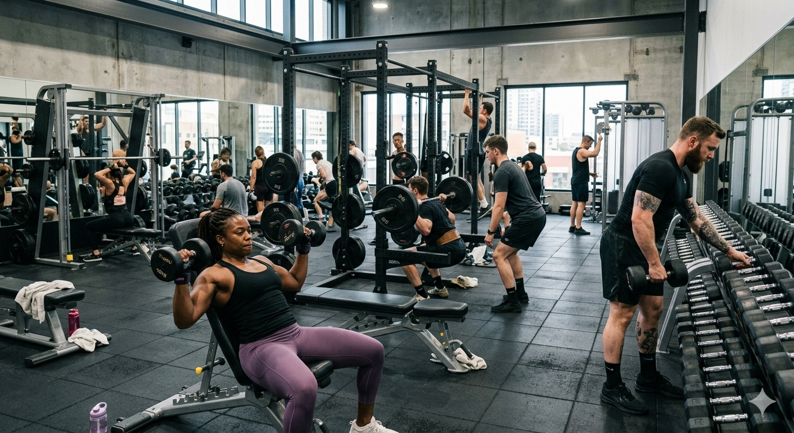

Somos uma academia dedicada a transformar vidas através do fitness e bem-estar. Nossa missão é proporcionar um ambiente acolhedor e profissional onde nossos clientes possam alcançar seus objetivos de saúde e condicionamento físico.

O Ginasio é equipado para atender todos os tipos de treino, desde quem busca fortalecimento muscular até quem procura condicionamento cardiovascular e bem-estar geral. Trabalhamos com um espaço completo e bem estruturado:
O Ginasio foi fundado com o objetivo de criar um espaço inovador e acessível para a prática de exercícios físicos. Desde nossa fundação, temos nos dedicado a oferecer equipamentos modernos, personal trainers qualificados e um ambiente motivador para que cada aluno possa alcançar seu melhor desempenho.
Nossa missão é promover a saúde integral de nossos clientes através de treinos personalizados, acompanhamento profissional e uma comunidade de apoio. Acreditamos que a prática regular de exercícios físicos não apenas fortalece o corpo, mas também eleva a confiança, a energia e a qualidade de vida de cada pessoa.